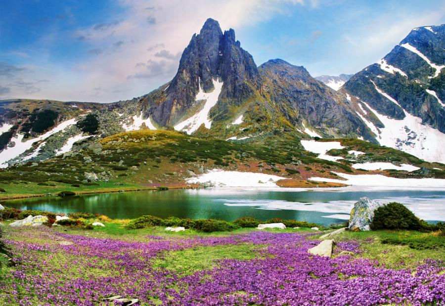
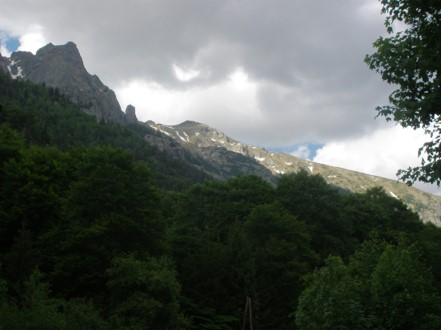
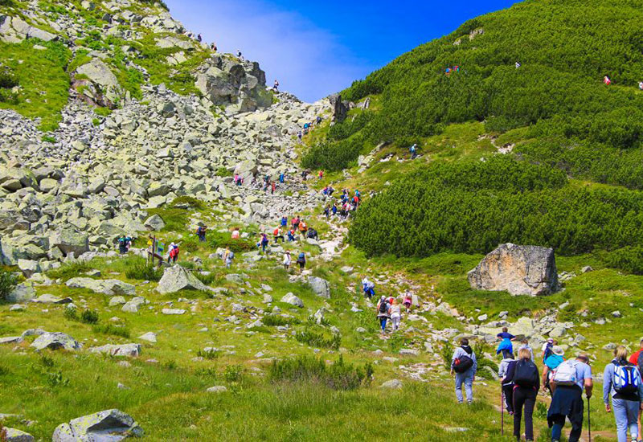

Рѝла е най-високата планина в България и на Балканския полуостров. Намира се в югозападната част на страната, и по-точно в
северозападния край на Рило-Родопския планински масив. Най-високият връх на планината – Мусала̀, със своите 2925,2 m е и най-високият на Балканския полуостров и цяла Източна Европа.
По билото на Рила минава Главният български вододел, който съвпада с Главния балкански вододел, разделящ водосборните басейни на Черно и Егейско море.
В Европа Рила се нарежда на 6-о място по височина след планините: Кавказ (връх Елбрус – 5642 m), Алпите (връх Монблан – 4807 m), Сиера Невада (връх Муласен – 3479 m), Пиренеите
(връх Ането – 3404 m) и Етна (3323 m). От планината извират едни от най-големите и пълноводни български реки – Искър, Марица и Места. Най-напред планината се е наричала Донука,
Дунакс, Доункас, а „Рила“ най-вероятно произлиза от глагола „рия“, и първо така е била кръстена реката със същото име. В Рила има над 200 езера и множество минерални извори в
разломните зони (Сапарева баня, Долна баня, Костенец, Баня и др.). В планината има многообразие на растителни видове – около 2000 и разнообразни представители на животинския свят.
Едно от най-забележителните места в Рила е Рилският манастир, най-големият в България, създаден през X век от Иван Рилски, светец и отшелник. Той е с огромно национално, архитектурно
и историческо значение. Средната надморска височина на Рила е 1487 m, а общата площ – 2629 km2. По-голямата част от високите върхове (2500 – 2700 m надморска височина) имат алпийски
изглед. Типичен пример за това е Мальовица. Останалата част, най-вече в Източна Рила, представляват високопланински ливади. Иван Вазов поетично оприличава Рила на „крепост, издигната
до облаците, със своенравно изкроени гранитни бастиони,… замръзнали в ефира подир последните трусове и конвулсии на мирозданието."
|
 |
|  |
Рила е блоково-разломна планина, представляваща сводово издигнат хорст с куполообразна форма, в който се наблюдават две разломни системи –
концентрична и радиална. Част е от най-старата суша в района на Балканите – Македоно-Тракийския масив. Планината е изградена основно от метаморфни и интрузивни скали.
Ядрото на Рила в по-голямата си част е изградено от гранит. Върху него лежи дебел пласт от кристалинни шисти и гранитогнайси, а над тях на места се срещат пясъчници и конгломерати,
резултат от издигнатите терциерни утайки. Следи от тези утайки се откриват в Северозападна Рила на височина до 1900 m. Най-високите части са изградени главно от гранити, а по-надолу
следват кристалинни шисти, чиито съставни минерали са последователно наслоени. Представени са от гнайс, слюдени шисти и амфиболошисти. На много места гранитът преминава в
гранитогнайс. Тук се намират още мрамори и амфиболити, формирани през палеозоя – преди повече от 250 милиона години и впоследствие при многобройни издигания през периода на терциера.
Планината е заледявана на няколко пъти през плиоцена и плейстоцена. Алпийският ѝ релеф е формиран при последното (Вюрмското) заледяване преди 10 – 12 000 години, когато снежната
граница на планината е на 2100 – 2200 метра. Над тази граница ледниците коренно променят съществуващия дотогава релеф, като образуват дълбоки циркуси (огромни кресловидни
вдлъбнатини, отворени от едната страна), остри карлинги (пирамидални върхове), скални зъбери (назъбени била), дълги и тесни трогови долини, обширни морени и други типични
ледникови форми. По склоновете на някои долини като Бели Искър, Марица и Рилска река се наблюдават т.нар. висящи ледникови долини – странични долини, разположени по-високо от
главната. Дъната на циркусите са заети от езера с ледников произход. В резултат на изветряне са се формирали сипеи с разнообразен характер. В югозападното подножие на Рила под
въздействието на ерозията са се образували Стобските пирамиди.
|
Морените в Рила се срещат на височина от 1100 до над 2100 m. Най-ниско са по долините на р. Бели Искър, Рилска река и Марица, а най-високо (над 2100 m) – при циркусните езера.
Най-големи морени се наблюдават при устията на реките Урдина, Мальовица, Белишка и др.
Поетапното издигане на планината през различните геоложки епохи и големият обхват на вертикалните нагъвания водят до формиране на пет различни по възраст, височина и обхват
денудационни нива.
Най-старото ниво, старомиоценското, обхваща терените по билната част на планината с надморска височина между 2900 и 2600 m. Представлява практически заравнени територии със
слабохълмиста повърхност, формирани на мястото на древни горски масиви.
Следващото ниво, младомиоценското, е разположено по главните странични ридове на планината като обхваща обширни билни заравнености. Заема площи с надморска височина от 2600 до
2300 m.
Третото ниво, староплиоценското, представлява силно огънато планинско стъпало. Намира се на надморска височина между 1800 и 1600 m.
Младоплиоценското ниво също е представено от нагънато планинско стъпало. Заема територии с надморска височина до около 1300 m.
Най-младото ниво има характер на подвижно стъпало, разположено между 1000 и 800 m надморска височина.
Езерата на Рила са най-забележителното завещание от ледниковия период, като над 200 от тях са разпръснати из планината, а Леденото езеро в северната част на връх Мусала е сред
най-високите ледникови езера на Балканския полуостров (второ след Горното Полежанско езеро в Пирин).
|
 |